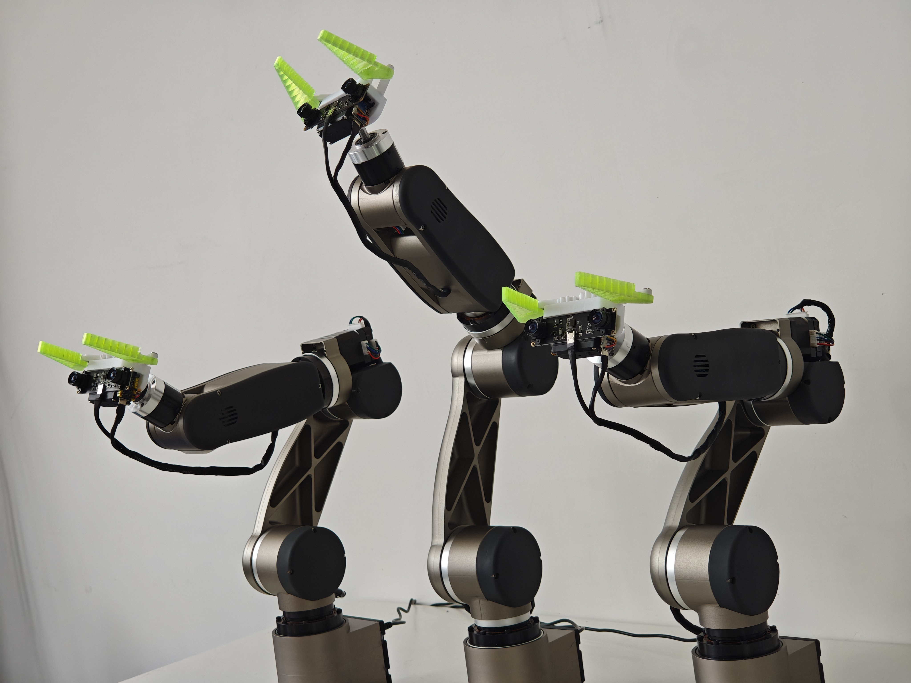
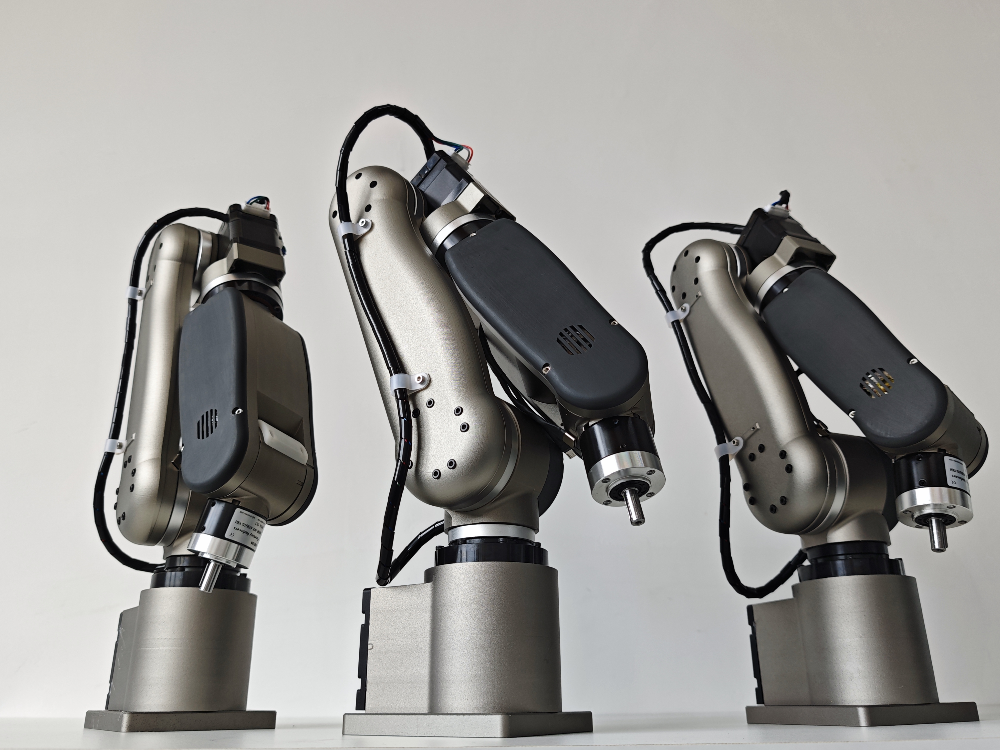
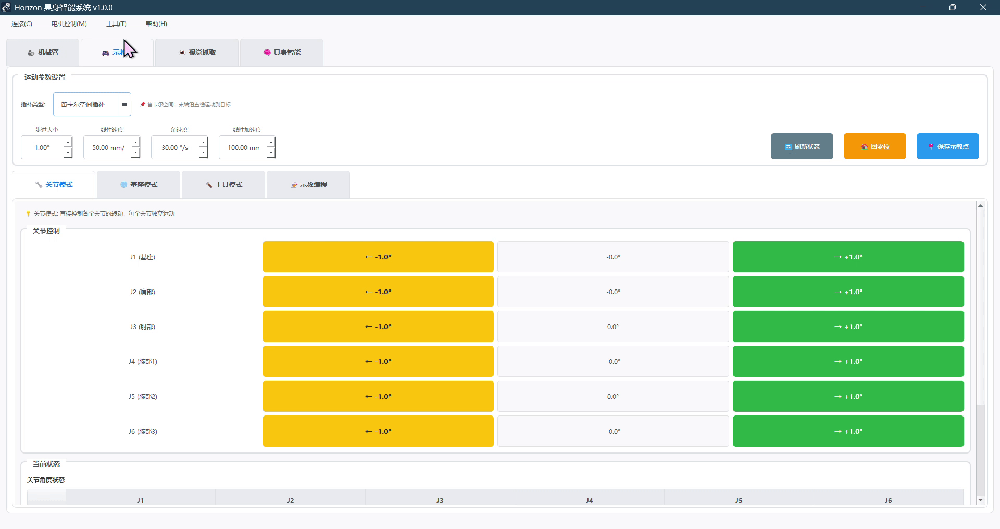
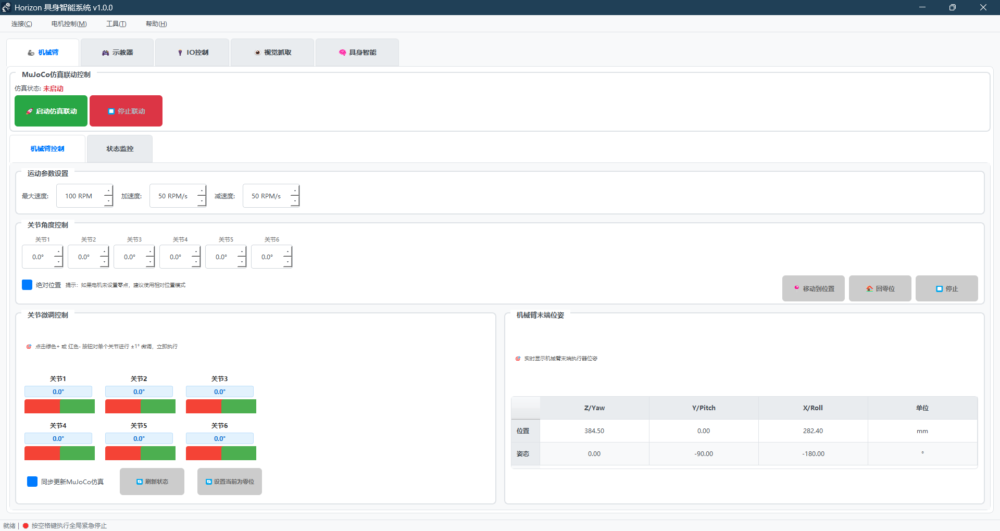

Horizon Arm 具身智能六轴机械臂¶
新一代智能机械臂解决方案¶
让机械臂更智能，让AI赋能更简单
🚀 AI驱动 • 视觉抓取 • 智能示教 • 开放生态


核心竞争力¶
| 🧠 具身智能 自然语言控制 图像理解对话 任务队列管理 |
👁️ 视觉抓取 双目深度估计 多目标识别 手眼标定 |
🎮 智能示教 轨迹录制回放 多坐标系控制 插补算法优化 |
🕹️ 手柄控制 Joy-Con直控 双模式切换 实时响应 |
🔌 IO控制 外部信号触发 设备联动 生产线集成 |
技术参数一览表¶
| 参数类别 | 规格指标 | 参数类别 | 规格指标 |
|---|---|---|---|
| 机械结构 | 6轴串联关节型 | 最大工作半径 | 456.9mm (球形工作空间) |
| 关节范围 | J1-J4,J6: ±180° J5: ±90° |
末端工具 | 二指平行夹爪 支持相机/传感器 |
| 重复定位精度 | ±0.1mm 关节微调 ±1° |
最大负载 | 2kg 降速情况下最大承载 |
| 机械臂自重 | 6.7kg 含底板重量 |
通信接口 | USB转CAN 500K波特率 |
| 视觉系统 | 双目相机 640×480分辨率 |
软件平台 | Windows 10/11 ROS2 Humble |
能力展示¶

智能示教编程
录制→编辑→回放

数字孪生仿真
预演→验证→执行
应用场景矩阵¶
🎓 教育科研
- 机器人学课程实验
- 控制算法验证平台
- 学生毕业设计项目
- 科研院所技术验证
- 创新实验室建设
- STEM教育项目
👁️ 视觉检测
- 颜色形状智能识别
- 二维码读取分拣
- 产品质量检测分级
- 缺陷自动化筛选
- 尺寸精度测量
- 图像处理算法验证
🎪 展览演示
- AI自然语言对话
- 技术能力现场展示
- 产品功能互动演示
- 客户参观体验
- 展会吸引人流
- 科技馆互动展品
🚀 研发创新
- 新算法快速验证
- AI模型训练数据采集
- 机器人技术预研
- 产品原型开发
- 技术方案演示
- 创客空间项目
为什么选择 Horizon Arm？¶
✨ 独特优势
- 即插即用：Windows可视化软件，无需复杂配置
- AI赋能：自然语言控制，降低使用门槛
- 多种控制：软件界面、Joy-Con手柄、ROS2平台等多种方式
- 仿真先行：MuJoCo联动，安全可靠
- 视觉融合：手眼标定，精准抓取
- 灵活扩展：IO控制、开放架构，适配各种场景
快速开始¶
软件界面预览¶

一体化控制平台：示教编程 • 视觉抓取 • 具身智能 • 状态监控
产品优势¶
⏱️ 快速部署
开箱即用，1小时完成基础配置
相比传统方案节省80%调试时间
🎓 降低门槛
自然语言控制，无需编程基础
让更多人员参与自动化项目
🔄 灵活扩展
开放架构，支持定制开发
一次投资，持续价值创造
Horizon Arm | 让机械臂更智能，让AI赋能更简单
© 2025 版权所有 • 技术参数以实物为准 • 持续迭代升级